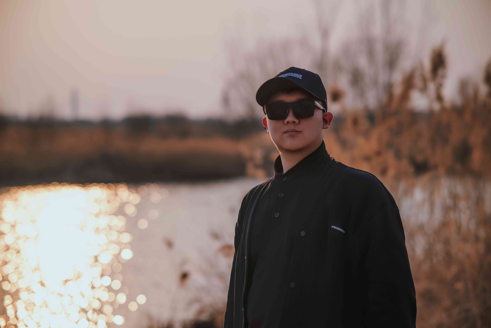

还记得我之前说的想要给你一个惊喜吗？你可能已经忘了吧我感觉，毕竟桃姐的工作那么忙。但是我现在还是说一句对不起吧，毕竟本来想的是给你送一束花的再写几句话告别的，没想到吧？！不是你拿走的那个熊😁（嘻嘻）结果没想到最后的结果并不像想象之中的GOODENDING但是也算是我预料之中的结果吧，现在当你打开这篇文章的时候，我应该已经离开轨院了，我知道陈姐你是一个感性的人，其实我也算是，所以我思来想去，最后决定给你一个网站给你我之间短暂但是又漫长的亦师亦友的关系给一个节点标记，可不要忘了我。
说来也是过的真快哎，说实话第一次和你聊天就是通过吴帅霖现在看那个聊天记录真的感觉你像一个可爱的姐姐（聊天的时候真的还没有见过你）到后面也真是碰巧，我记得不错的话我应该就是通过做海报做背景和你认识的，后面返校也是通过做图什么的和你熟起来的，其实你给我的第一印象其实是挺暴躁的，但是后面才发现你的有时候的暴躁也算是你的事业心和对事情负责的态度，后面你给我的印象更多的有趣活泼，说实话我真的挺喜欢这样的老师的，长得还好看。
回想再这大学的三年，不对🤔，算上这回算是4年了😂，过的是真快啊，我现在还记得当时我在报道那天的场景，这几年我真的很庆幸我选择了学生会这个大家庭，虽然可能加入的点不算早但是轨院的学生会真的给我留下了很深的印象，在这里我认识了好多人还有美丽可爱活泼的你，我也很感谢你在我去年年底的时候让我可以一直在宿舍住着，真的给我了好大的方便，我个人感觉比起师生我们在平时的相处更像是朋友，这一回我感觉是真的要说再见了，虽然我在写这一篇文章的时候并不知道我最后的面试是什么样的，希望这回是顺利的吧
说了这么多，也回忆了那么远，也很感谢你可以看到这里，如你知道的我的知识的储备并不算多我只能用最朴素的语言去描述你我之间这几年的相处
新疆很大，河北很美
美丽的陈小姐
我相信
我们可以在未来慢慢的时间长河之中
越过山海
再次相遇
— By 2026届学生会最会摇的成员 —
— 祝您天天开心事业蒸蒸日上少生气少操心别感冒—